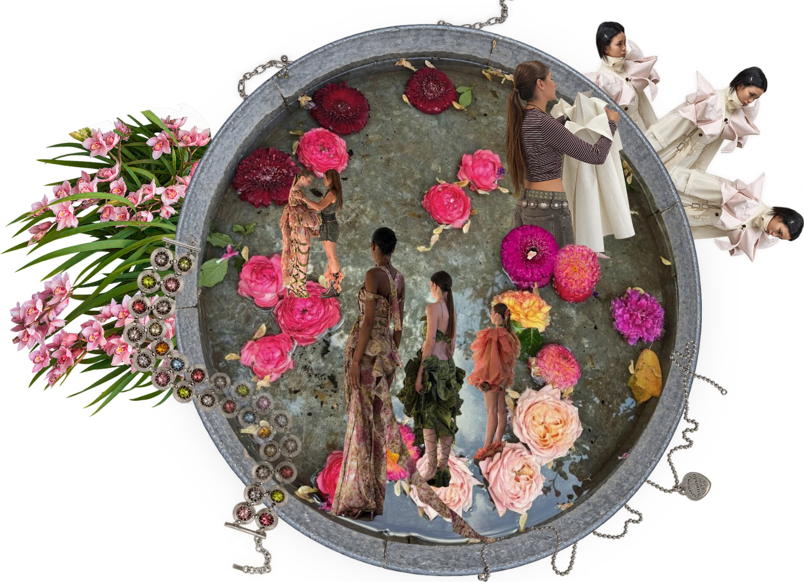

Soy Marlene Pauletich San Juan, diseñadora de moda, vestuario y estilista.
En cuanto a formación profesional recientemente terminé un máster en Diseño de Moda en IED Barcelona y previamente me formé en Argentina como Productora de Moda y Licenciada en Marketing.
Este moodboard representa mi último año como diseñadora de moda, busco profundizar un poco en la mezcla que suele ser el proceso creativo y como poco a poco me voy dando cuenta que todos mis proyectos tienen un hilo conductor, mi esencia.
Mis principales intereses son la creación de un universo creativo cohesivo, la construcción de personajes/colecciones desde un detonante creativo y la transformación de prendas a través del upcycling.
Esta sección se compone por una serie de videos propios en los que busco resignificar y darles nueva vida e identidad a prendas ya existentes por medio de diferentes técnicas de upcycling: deconstrucción y reconstrucción de prenda, sublimado de imágenes, collage textil, utilización de tintes textiles, aplicación de strass, remaches y fornituras varias.
El upcycling fue para mi el primer acercamiento a prendas, sus texturas y formas de manipulación. Previo al máster de diseño de moda donde aprendí las técnicas "correctas" de confección y terminación de prendas, esta sección resalta mi proceso de experimentación con la maquina y autoaprendizaje de la misma y de como se comportan los diferentes géneros.